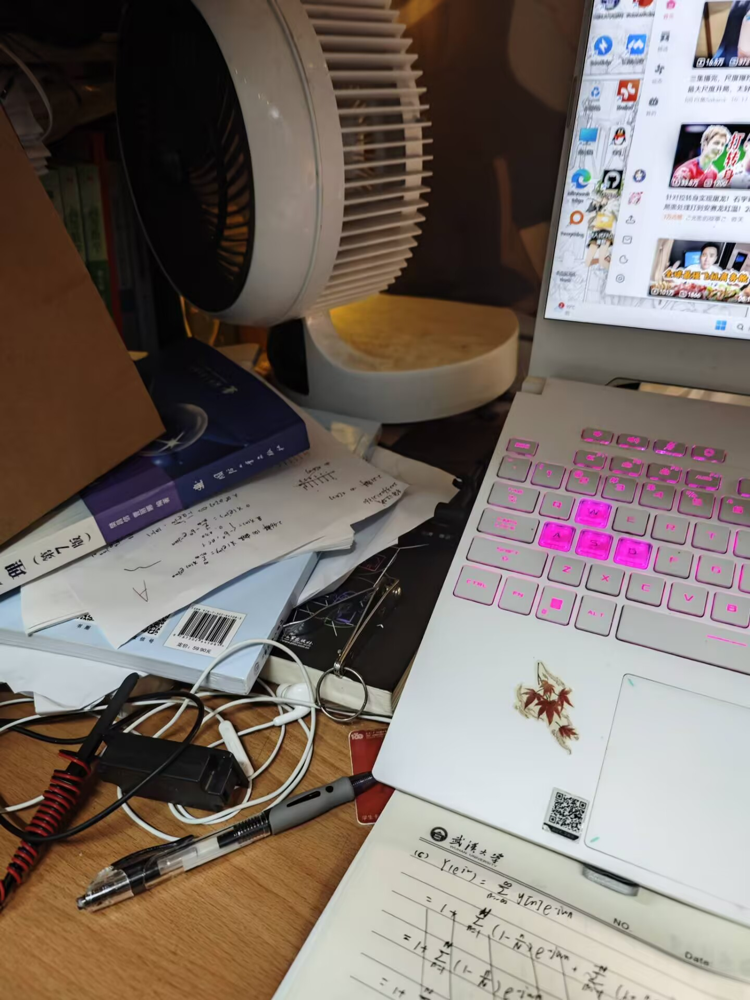
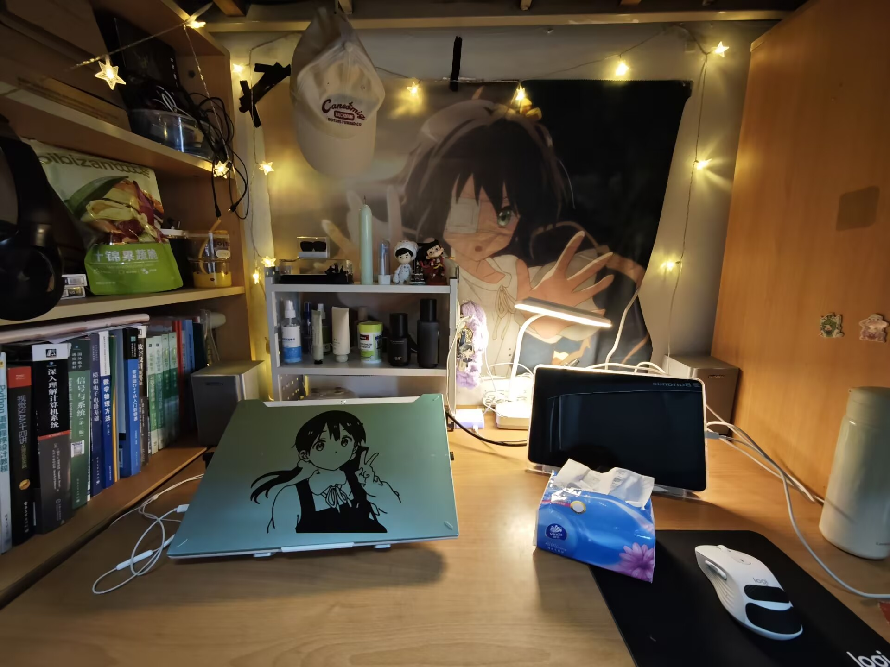

作为电信的，平常还是不少事儿是要在桌面上干的，比如放电脑，焊个东西啥的，再加上买的元器件堆积，久而久之，桌面的杂物就多了起来，都没地方放了，只能堆在桌子上，看着怪乱的，所以前段时间我下定决心要整理一下我的桌面，顺便把桌面以前做的小项目升级一下。
1. 以前的桌面：拉完了
如下图，这甚至都不是我最乱的时候，而且照片没拍全，以前好像没拍过桌面的全景照，以前还没有平板呢，电脑后面堆了一堆的课本，线材，零食啥的，电脑都没地方放了，更别说现在还有平板了
还有一部分原因是桌面上放了一个大风扇（但也没咋用，因为不知道放哪儿），而且还有很大一块儿被原来的蓝牙音响占了，没有位置放别的东西，导致桌子最里面其实很挤，还容易积累灰尘啥。
一直说着要收拾，但是那么多东西，还有一部分元器件呢，也不知道放哪儿，就一直没有下定决心收拾。

原来的桌面，是不是很乱2. 唯一真神：置物架
看到好多人买了置物架，就在淘宝上买了个两层隔板的置物架，可以放三排东西，到手真香吧，各种东西都塞进去了。
先把原来的东西全部清出来，不要的丢掉，一样的合并，然后把腾出来的桌子用酒精消毒，擦擦灰尘啥的，就准备开始整理桌面了。
把书和元器件，还有一些平常可能用不着的东西都放在了左侧的架子上了，至于置物架，最下面的一排放着我的手柄和电脑电源，中间一排放着一些护手霜、护肤品等一些日用品，最上面一排是展示栏，放着我的公仔，摆件和牙刷梳子之类的，整体看起来还是很好的。
置物架右边放着我的蓝牙音响、台灯、排插，最左右两侧是我的音响，享受双声道环绕，挺爽的，背景是小鸟游六花，围了一圈简单的氛围灯，这还是之前做的，红外感应的，做了一个开关，挥手就可以实现开关。

反正我自己看着好了很多，还有几分温馨呢3. 下一阶段
感觉还能再整点花活儿啊，下面是我的一些想法。
- 1、侧边置物架： 右边的侧面还是空着呢，可以再放一个侧边置物架，放我的耳机，水杯啥的，还没想好呢 。
- 2、氛围灯： 感觉以前的氛围灯不够炫酷，我要整一个RGB灯带，在桌子边贴一圈，做一个简单的控制站，用手机app控制，感觉会很高级啊。
以上就是我的桌面布局分享，虽然还不完美，但让我非常享受收拾的过程。